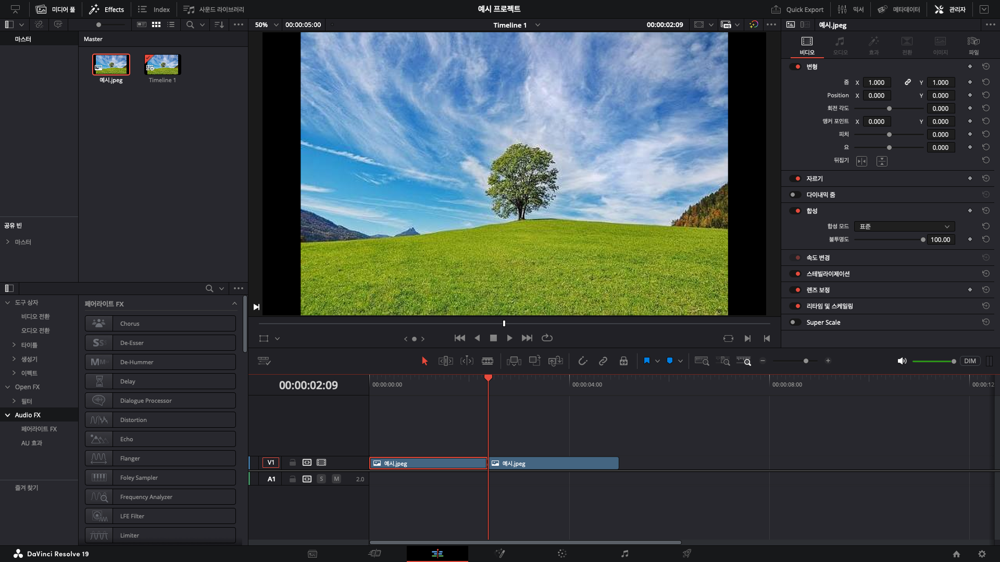

컷 편집이 빨라지는
단축키 12개
마우스 이동을 줄이는 것만으로도 타임라인의 리듬이 달라집니다. 아래 단축키부터 손에 익혀 두면, 편집의 흐름을 끊지 않고 러프 컷을 완성할 수 있어요.
Mac 단축키 · ⌘는 Command 키입니다.
-
01 ⌘ + B
재생 헤드 위치에서 클립을 자르기
1. 자를 위치에 재생 헤드를 놓으세요
자를 클립을 선택하고, 빨간 세로선인 재생 헤드를 자를 위치로 옮기세요.
분할 전 · 클릭하면 원본 보기 2. 단축키를 눌러 클립을 둘로 나누세요
Mac은 ⌘ + B, Windows는 Ctrl + B를 누르면 재생 헤드 위치에서 클립이 둘로 나뉩니다.

분할 후 · 클릭하면 원본 보기 나뉜 클립은 각각 이동하거나 길이를 조절할 수 있어요.
-
02 A
선택 모드로 전환하기
클립을 옮기거나 길이를 조절할 때 쓰는 기본 모드입니다. 블레이드 작업을 마친 뒤에는 A를 눌러 선택 모드로 돌아오는 습관을 들여 보세요.
-
03 B
블레이드 편집 모드로 전환하기
타임라인에서 여러 지점을 연속해서 자를 때 편리합니다. 자르기가 끝나면 A를 눌러 원치 않는 분할을 방지하세요.
-
04 ⌘ + Z
마지막 작업 되돌리기
방금 한 편집, 이동, 삭제를 한 단계 되돌립니다. 여러 번 누르면 이전 작업도 순서대로 되돌릴 수 있습니다.
-
05 Space
재생과 정지 전환하기
재생 헤드가 있는 지점부터 재생하거나 멈춥니다. 마우스로 재생 버튼을 누르는 동작을 줄여 주는 가장 기본적인 단축키입니다.
-
06 J / K / L
역재생, 정지, 정재생을 키보드로 제어하기
J는 뒤로, K는 정지, L은 앞으로 재생합니다. J 또는 L을 연속으로 누르면 재생 속도가 빨라져 긴 영상의 내용을 빠르게 확인할 수 있습니다.
-
07 I / O
인점과 아웃점 지정하기
I는 시작 지점, O는 끝 지점을 지정합니다. 필요한 구간을 먼저 정확히 표시해 두면 삽입, 덮어쓰기, 리플 삭제가 훨씬 안전해집니다.
-
08 ⌘ + Shift + X
인점과 아웃점 사이를 리플 잘라내기
타임라인에서 I / O로 구간을 표시한 뒤 실행하면, 활성 트랙의 해당 구간을 잘라내고 뒤의 클립을 당겨 빈 공간을 닫습니다. 잘라낸 구간은 클립보드에 남아 다시 붙여넣을 수 있습니다. 실행 전에 영향을 받을 트랙의 자동 선택 상태를 확인하세요.
-
09 ⌘ + T
선택한 편집점에 기본 전환 추가하기
클립 사이 편집점에 설정된 기본 전환을 바로 추가합니다. 자주 쓰는 전환을 기본값으로 지정해 두면 작업 시간이 줄어듭니다.
-
10 M
현재 위치에 마커 남기기
재생 헤드 위치에 마커를 추가합니다. 수정이 필요한 장면, 음악 비트, 클라이언트 피드백 위치를 기록할 때 사용하세요.
-
11 ↑ / ↓
이전 또는 다음 편집점으로 이동하기
위쪽 화살표는 이전 편집점, 아래쪽 화살표는 다음 편집점으로 재생 헤드를 이동합니다. 컷 사이를 빠르게 점검할 때 특히 편리합니다.
-
12 Shift + Z
타임라인 전체가 보이도록 화면 맞추기
타임라인에 있는 전체 클립이 화면에 들어오도록 확대 비율을 자동 조정합니다. 긴 프로젝트에서 전체 구조를 확인할 때 사용하세요.
DaVinci Resolve 기본 키보드 프리셋의 Edit 페이지 기준입니다. 사용하는 프리셋이나 직접 지정한 키에 따라 달라질 수 있으니, 키보드 사용자 설정(Keyboard Customization)에서 확인해 보세요. Blackmagic Design 공식 단축키 참고 자료 (PDF)